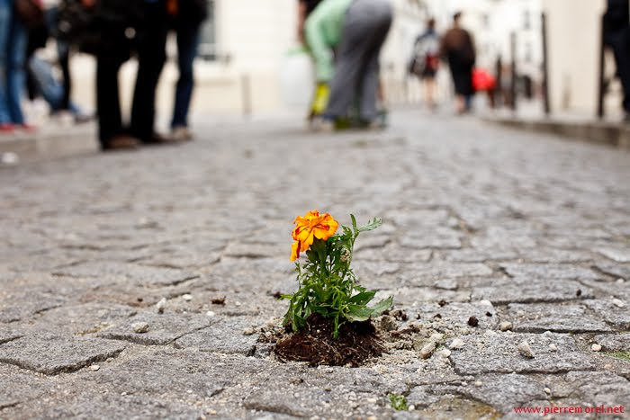

This website is dedicated to helping guerrilla gardeners find locations for guerrilla gardens and maintain gardens throughout the city. The marker on the map each represent a garden. The color of the markers represents the plant's current livelyhood: green is a happy garden, yellow gardens have needs, red gardens are dying, and black points indicate that there is curretly not garden in the area. To the left of the map are 4 buttons used to add new gardens to the map, add new locations, show the guerrilla gardening best practices, and to provide links to community based forums. This website is community drive so participation from gardeners like you makes it all possible. Good luck and happy digging!
content here...